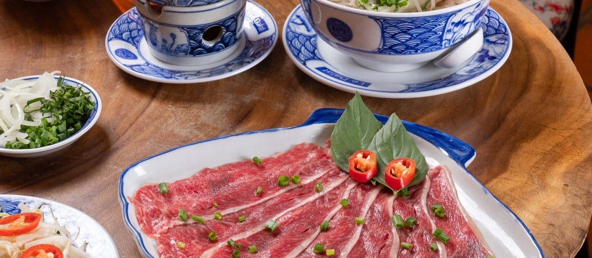
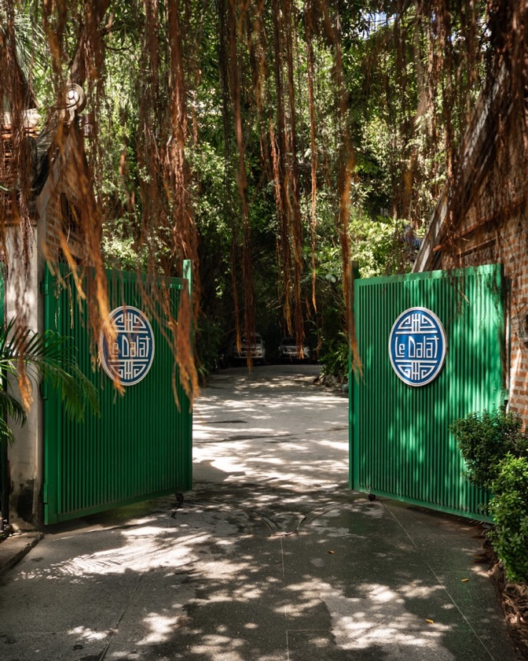
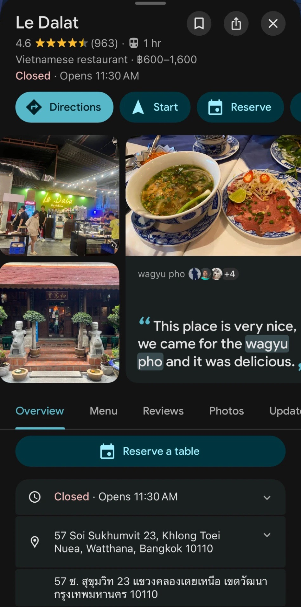
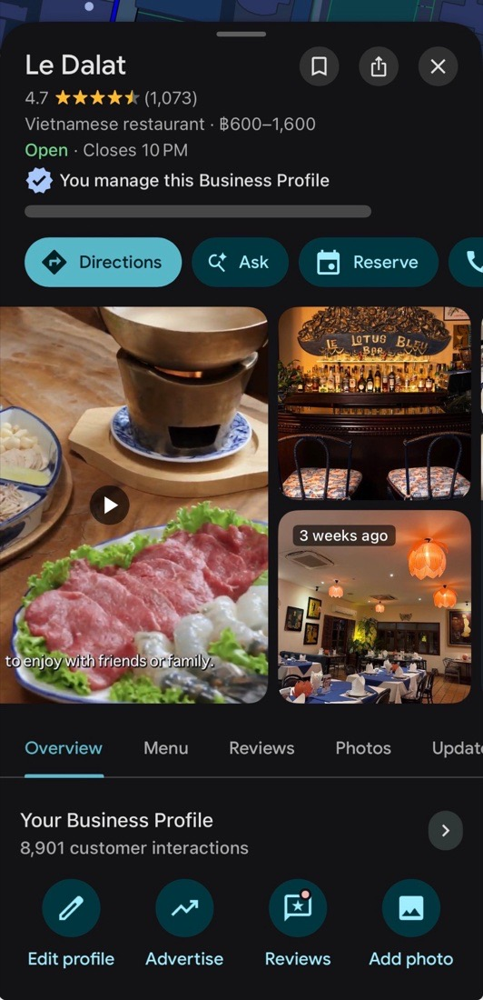
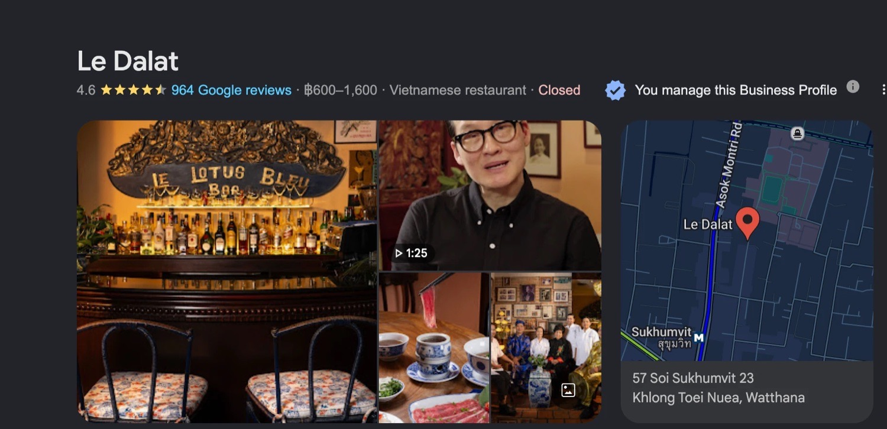
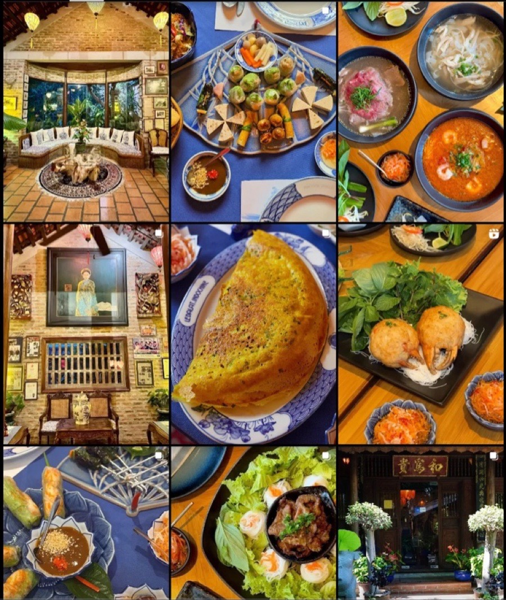
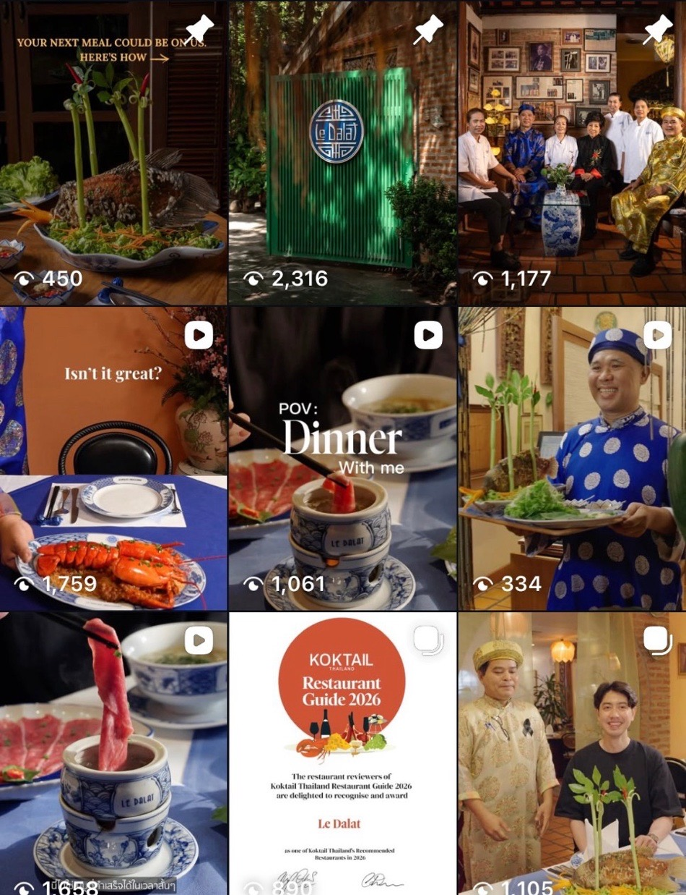
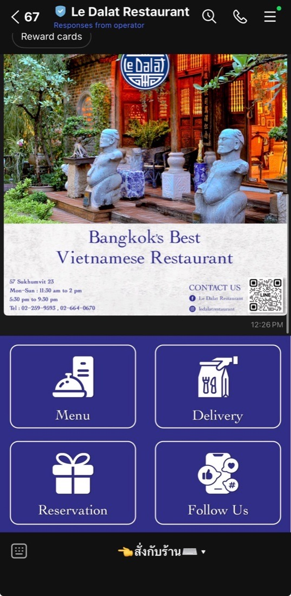
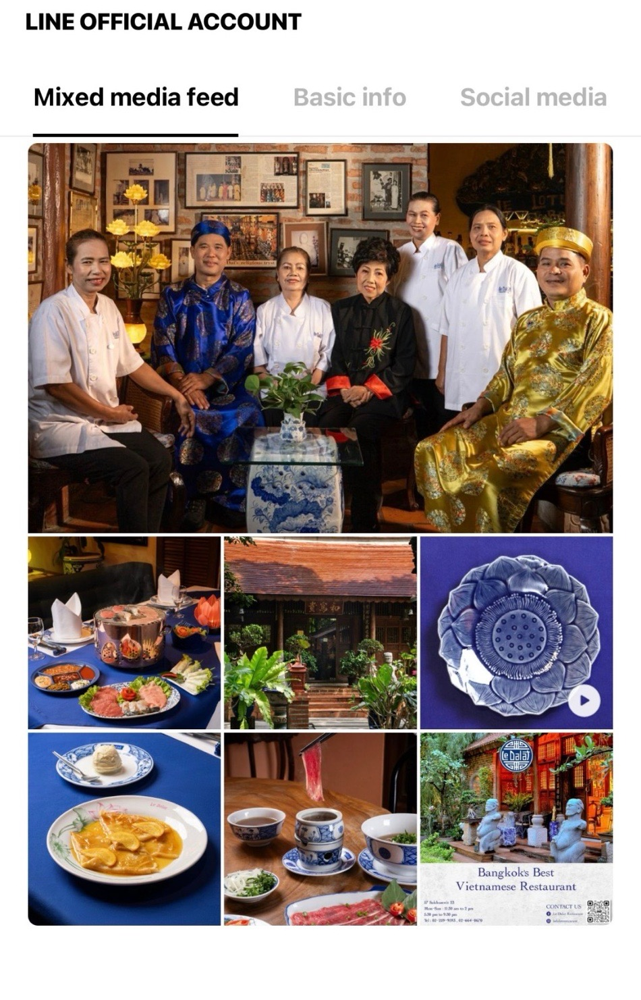
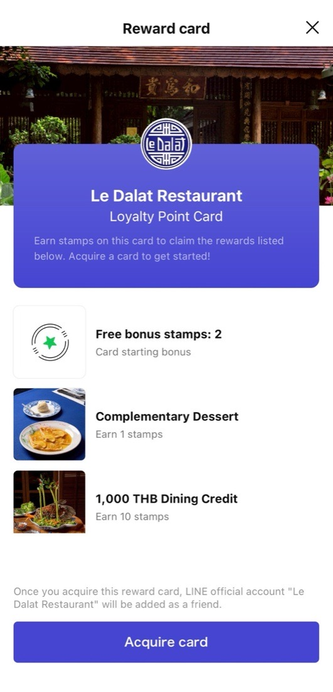

Case study · Bangkok
Le Dalat
Nearly fifty years of Vietnamese fine dining on Sukhumvit 23. The heritage was never in question. Finding it online was.

Where it started
A famous restaurant that photographed like a canteen.
Le Dalat has the things you cannot manufacture: a grandmother's recipes, a room full of family portraits, forty-odd years of regulars. None of it reached anyone deciding where to eat, because the first thing a new diner saw was whatever a stranger had photographed on their phone.
Nothing here is a redesign. Every change below is the same restaurant, shown properly.

Google Business Profile
The first thing anyone sees, taken back.
For a restaurant this is the shop window, and almost nobody treats it that way. The listing now leads with photography we directed and an interview with the owner, instead of whatever happened to be uploaded last.



Production
Where that photography comes from.
The brief, the shot list and the reason for every frame are mine. On this one I was in the room. When I am not, I brief a production team near you and direct from there.
On set at Sukhumvit 23.
From a plate of food to a point of view.
The old grid was dishes on tables. The new one has the family, the room, the awards, the owner, and the dishes shot like they belong in a fine-dining restaurant, because they do.
Three posts sit pinned at the top, and each one has a job. The first carries the loyalty offer. The second is the brand, the gates and the mark. The third is the family, because the people are the reason to come. Anyone landing on that profile meets the offer, the identity and the story in one screen.


The number that matters here is the second one. Four in five people who saw this restaurant were not already following it, which is what discovery looks like when it works. The audience skews to the age bracket that books fine dining.
LINE
The channel that reaches people who already came once.
In Thailand, LINE is where a restaurant keeps its regulars. It was a menu of buttons. It is now a proper storefront with the same photography as everything else, and a loyalty programme underneath it.



The loyalty programme
There is no before for this one. It did not exist.
I designed it from scratch: stamp logic, reward tiers, redemption rules, staff procedure and the broadcasts that drive signups. Two bonus stamps to start, a dessert at one stamp, a thousand baht of dining credit at ten. Rewards redeem on the next visit, stamps issue after the bill is paid, and there is no loophole in it.
It is built to do one thing: turn a first visit into a second one.
Seven months
What it added up to.
January to July 2026. Instagram reach up from 393 a month to a peak of 9,135. Bookings up from a 10 to 18 baseline to 34 a month through Google alone. The third-party reservation platform was replaced with a system they own, which removed the per-cover fee entirely.
Let's find out what's actually holding you back.
Twenty minutes. I'll ask about your business, you ask whatever you want, and whether we work together or not, you'll leave with immediate next steps.